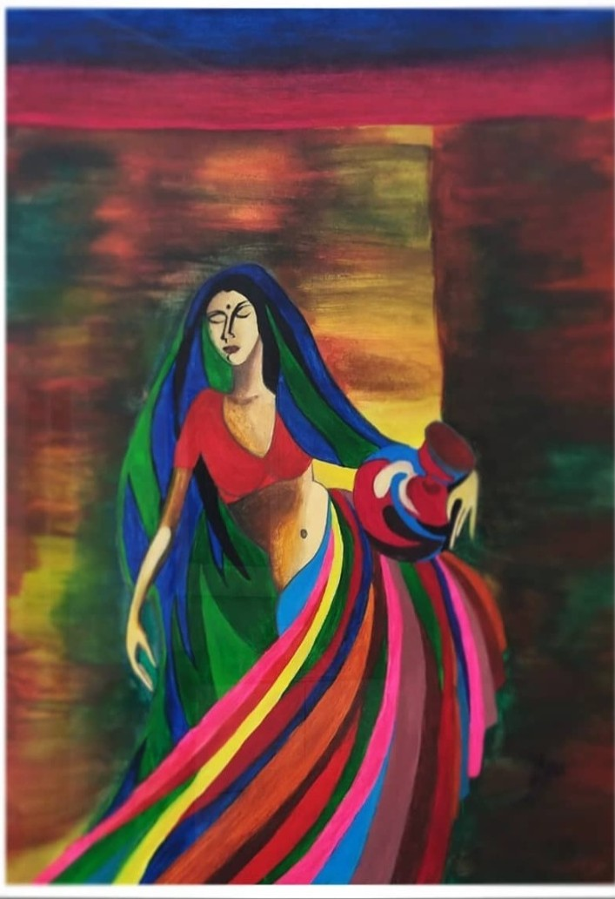

Alexie Kenneth Adams

Colombo
Oil Paintings
Contemporary / Figurative / Cultural Fine Art / Abstract
Biography: Alexie Kenneth Adams is a fine artist with over 40 years of painting experience, whose work is rooted in classical traditions while also pushing their boundaries through original pieces and thoughtful reworkings of classical fine art. Over the years, he has developed a distinctive style shaped by technical exploration, cultural resonance and sustained artistic commitment. His works often draw on cultural themes and are created to evoke reflection, emotion and a renewed way of seeing. Through this practice, he continues to build a body of work that is both grounded in tradition and open to new expression.
Presented through Cithambara Diya: Madeline after Prayer by Daniel Maclise, The Song of the Angels by William-Adolphe Bouguereau, Napoleon Crossing the Alps” by Jacques-Louis David, Kandyan Wedding Couple, Serenity in Motion, Kandyan Dancers, Guttila & Musila (Version 2), Harmony in Motion (Intertwined in Grace), Morning Roundup by Mark Keathley, Waves, Harvest of Grace
Sana Shaffeek

Original Paintings
Figurative / Still Life / Drawing / Recreations
Biography: Sana's path as an artist has grown from a foundation built over five years of study and continues to evolve through the quiet rhythms of daily life. As the mother of a four-month-old daughter, she moves between the responsibilities of care and the focused time she spends in the studio. This balance shapes the way Sana observes and records the world, allowing her work to hold both structure and openness. She completed five years of foundational training at Mentart IMHA, which gave her a broad grounding across several approaches to art. Her practice includes pencil sketching with its clear and detailed lines, impressionism with its focus on light and colour, and the open expression found in abstract and contemporary work. Sana works with texture, form, and feeling to create pieces that reflect both what she sees and what she experiences. Each work develops through careful layering and observation. Through this process, Sana aims to offer viewers a quiet space for reflection and connection.
Presented through Cithambara Diya: Figure of grace, The gossip in Gauguin's shade, Love, Pair of Leather clogs, Layered identity, Stellar Vision, Vincent Nelum, Palate Cherry, The Hangman's House, Lightings, Still Sketch